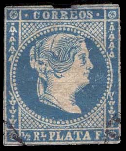

Return To Catalogue - Cuba 1864-1871 (Spanish Westindies) - Cuba - Porto Rico
Note: on my website many of the
pictures can not be seen! They are of course present in the
catalogue;
contact me if you want to purchase it.
Currency: 8 Reales Plata = 2
Escudos = 1 Peso
1866: 100 Centavos = 1 Escudo
1871: 100 Centavos = 1 Peseta
1/2 Rl.Plata F. blue 1/2 Rl.Plata F. green 1 Rl Plata F. green 2 Rs Plata F. red Surcharged (for local use in Havana)

(Reduced view)


'Y 1/4' on 2 r red
There exist several types of the overprint, 2 main types, one broad and one small and further some different shapes of mainly the 'Y'. To make things even more complicated, there exist at least 3 types of forged surcharges on genuine stamps!
These stamps were issued with two different watermarks (loops or crossed lines) and also unwatermarked.
Value of the stamps |
|||
vc = very common c = common * = not so common ** = uncommon |
*** = very uncommon R = rare RR = very rare RRR = extremely rare |
||
| Value | Unused | Used | Remarks |
With watermark 'Loops' (on bluish paper) |
|||
| 1/2 r | ** | c | |
| 1 r | ** | * | |
| 2 r | *** | c | |
| 'Y 1/4' on 2 r | RR | *** | |
| With watermark 'Crossed lines' (on yellowish paper) | |||
| 1/2 r | c | c | |
| 1 r | R | c | |
| 2 r | R | c | |
| No watermark (white paper) | |||
| 1/2 r | c | vc | |
| 1 r | c | vc | |
| 2 r | * | c | |
| 'Y 1/4' on 2 r | *** | *** | |
The above shown cancellation: an ellipse with lines and stars inside, seems to be the most common.
Examples of forged overprints:
(Forged overprint on genuine stamp!)
(Forged overprints of Fournier and forged Fournier cancel taken
from a Fournier Album of Philatelic Forgeries)
Reduced size
More information on forged 'Y1/4' overprints can be found at http://www.philat.com/FIL/Sc005-008/Cuban8Forgery.html. According to the site http://www.somestamps.com/pages-articles/049-064/article051-200501-cuba-i-griega-forgeries.htm, the genuine overprints are always placed near the center of the stamp. The 'Y 1/4' was printed with thick oily ink.
Philatelic forgeries:


The above stamp is the first forgery mentioned in Album Weeds, it has 78 pearls (instead of 73) in the circle surrounding the head. The cancel consists of a few parallel lines (I don't think this cancel was ever used in Cuba). In the 2 Rs value the '2 RS' is badly done and placed too far to the left. The 2 Rs value exists on white or bluish paper.

The Queen has a very pronounced chin in the above forgeries and
the background behind the circle consists of lines. I've also
seen the 1 Rs value with a cancel consisting of 4 concentric
circles. The forged cancel 'CORREOS 7.1.60. II-III' also appears
on other forgeries of Uruguay, Honduras, Venezuela, Colombia,
Brazil, Buenos Aires, Peru, Spain, Cuba, etc.


A badly executed forgery with no dot behind the '2' and the '2'
placed too far to the right; it might be the forgery mentioned in
Album Weeds. It has a very pronounced 'eye'. I've also seen it
cancelled with a concentric 4-ring cancel. Next to it the same(?)
forgery with 'Y1/4' overprint.

I've been told that this is a postal forgery of the 1/2 r value
with a very pronounced 'eye'. It was obviously made by the same
forger who made the above forged 2 r stamps.
Forgeries with irregular dots when compared to the genuine
stamps.
Forgeries with 79 pearls
Forgeries with 64 pearls

1/4 r black
Stamps in the same design were issued for Spain.
Value of the stamps |
|||
vc = very common c = common * = not so common ** = uncommon |
*** = very uncommon R = rare RR = very rare RRR = extremely rare |
||
| Value | Unused | Used | Remarks |
| 1/4 r | * | * | |
Forgeries, example:

(Forgery)

Some non-existing values 2 Rs.Plata F. red, 1/2 Rl Plata. F.
green and 1 Rl Plata F. blue. These forgeries only have 29 pearls
at the right hand side (genuine stamps have 43 pearls). The 1/4 r
black also exists in this forgery type. It is the first (and
only) forgery described in Album Weeds of this stamp. See also 'CORREOS 7.1.60. II-III' forged cancels.
Cuba 1864-1871 (Spanish Westindies)
{kind=link}
{kind=link}